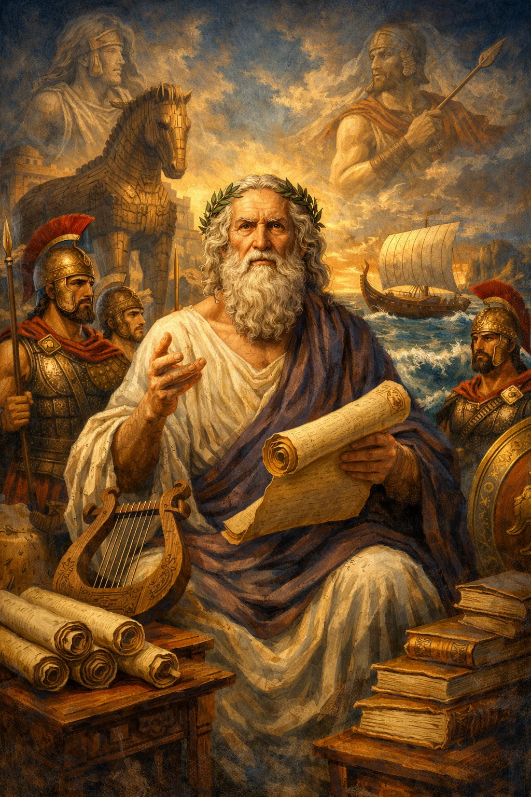

El origen de la mentoría
Contenido teórico/práctico de numerosas herramientas de mentoría, a partir de la obra de Homero.
El aprendizaje continuo fortalece tu criterio, amplía tu mirada y multiplica tu capacidad de acompañar con mayor impacto.

Te invitamos a navegar por los contenidos de este programa
En este espacio encontrarás una obra escrita creada por la Academia Global RGM, que rescata los puntos más importantes de la obra de Homero y los puntos de enseñanza que nos invita.
A continuación te presentamos «La mentoría como camino humano». Esta tríada de guías propone un recorrido completo por «Fundamentos y práctica de la mentoría consciente».

Tomo 1 – El origen: el camino que nace
Este proceso formativo se sustenta sobre el Tomo I de esta tríada de manuales de la Academia Global.
El origen: el camino que nace
Los umbrales: el camino que se cruza
La disciplina: el camino que se aprende a ejercer
Los Tomos II y III se analizan en otras formaciones.
Le invitamos a ver este documental de alto valor
La Ilíada y la Odisea: súper maratón.
Reflexiones sobre el Tomo I
Veamos algunas reflexiones importantes del Tomo I de esta tríada.
1.ª reflexión: la mentoría no es una técnica, es un camino de transformación compartida
Uno de los aportes más valiosos del libro es la forma en que reposiciona la mentoría. No la presenta como una metodología instrumental ni como una herramienta más dentro del desarrollo profesional. La define como un camino humano.
2.ª reflexión: el umbral invisible, cuando el mentor aprende a retirarse
Otra dimensión profunda que atraviesa el libro es la comprensión de los umbrales humanos.
Cada nuevo conocimiento expande tu preparación
Aumenta tu capacidad de asistir con mayor claridad, responsabilidad y profundidad.